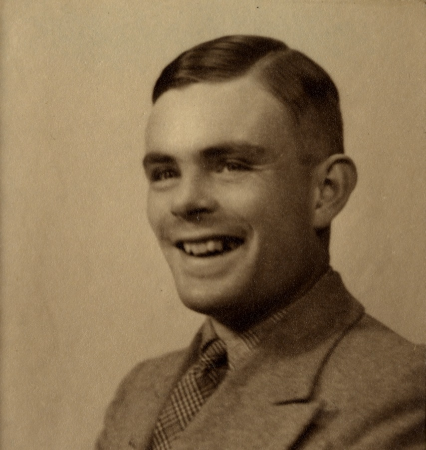

Allan Turing
Qui est donc ce génie ..?

Allan Turing et la Machine Enigma
Allan Mathison Turing, né le 23 Juin à Londres, mort le 7 Juin 1954 à Wilmslow, est un mathématicien et cryptologue britannique,
auteur de travaux qui fondent scientifiquement l'informatique.
Pour résoudre le problème fondamental de la décidabilité en arithmétique, il présente un 1936 une expérience de pensée que l'on nommera ensuite machine de Turinge
et des concepts de programme et de programmation, qui prendront tout leur sens avec la diffusion des ordinateurs, dans la seconde guerre moitié du 20ème Siècle.
Son modèle a contribué à établir la thèse de Church, qui définit le concept ce mathématique intuitif de fonction calculable.
Durant la seconde guerre mondiale, il joue un rôle dans la cryptanalyse de la machine Enigma utilisée par les armée allemandes ) l'invention de machines usant de procédés éléctroniques,
les bombes, fera passer le décryptage et plusieurs milliers de messages par jour.
Ce travail secret me sera connu du public que des les années 1970. Après la guerre, il travaille sur un des tout premiers ordinateurs, puis contribue
au débat sur la possibilité de l'intelligence artificielle, en proposant le test de Turing.
Vers la fin de sa vie, il s'intéresse à des modèles de morphogenèse du vivant conduisant aux "structures de Turing".
Poursuivi en justice en 1952 pour homosexualité, il choisit, pour éviter la prison, la castration chimique par prise d'oestrogènes.
Il est retrouvé mort par empoisonnement au cyanure le 8 Juin 1954 dans la chambre de sa maison à Wilmlow. La reine Elisabeth II le reconnait comme héros de guerre et le gracie à titre posthume en 2013.
Allan Turing a crée la machine Enigma qui est une machine électromagnétique portative servant au chiffrement déchiffrement de l'information.
Elle fut inventé par l'Allemand Arthur Scherbius, reprenant un brevet du Néerlandais Hugo Koch, datant de 1919. Enigma fut utilisée principalement par les Allemands pendant
la seconde guerre mondiale.
Le terme Enigma désigne en fait tout une famille de machines, car il en a existé de nombreurse et subtiles variantes, commercialisées en Europe et dans le reste du monde à partir de 1923.
Elle fut aussi adoptée par les services militaires et diplomatiques de nombreuses nations.
Son utilisation la plus célèbre fut celle faite par l'Allemagne nazie et ses alliés, avant et pendant la seconde guerre mondiale, la machine étant réputé inviolable selon ses concepteurs.
Néanmoins un nombre de messages Enigma ont pu être décryptés.
Dès 1931, le service français de renseignement (surnommé le 2ème Bureau) était parvenu à recruter une source au sein même du bureau du chiffrement du ministère de la Reichswehr.
Ils obtiennent de lui de premières copies de la documentation, il les proposa à l'intelligence Service britannique, qui se montra sceptique, et au service polonais, qui fut très intéréssé.
Une coopération s'instaura, qui allait durer jusqu'en 1939. Les français continuèrent de fournir de nouveaux renseignements obtenus de la même source, et les Polonais montèrent une équipe qui
parvint à reproduire la machine à partir de la documentation de plus en plus précise qui leur parvenait.
Enigma chiffre les informations en faisant passer un courant électrique à travers une série de composants. Ce courant est transmis en pressant une lettre sur le clavier, il traverse un réseau
complexe de fils puis allume une lampe qui indique la lettre chiffrée. Le premier composant du réseau est une série de roue adjacentes, appelées
"rotors", qui contiennent les fils électriques utilisés pour chiffrer le message. Les rotors tournent, modifiant la configuraiton complexe du réseau chaque fois qu'une lettre est tapée.
Enigma utilise habituellement une autre roue, nommée "réflecteur", et un composant appelé "tableau de connexion", ce qui permet de complexifier encore plus le processus de chiffrement.